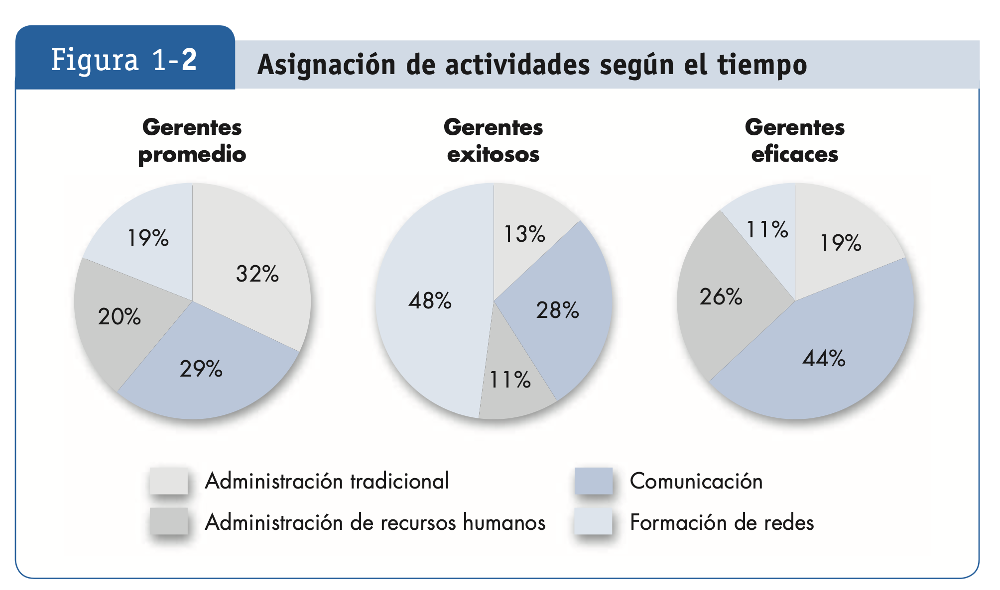

Comportamiento Organizacional
1 ¿Qué es el Comportamiento Organizacional (CO)?
El comportamiento organizacional (CO) es una disciplina que estudia el efecto que los individuos, los grupos y las estructuras tienen sobre el comportamiento dentro de las organizaciones. Su objetivo principal es aplicar este conocimiento para mejorar su eficacia, explorando cómo las personas interactúan entre sí y con su entorno laboral. Este campo aborda factores clave como la motivación, la comunicación, la cultura, el liderazgo, y se centra en situaciones del ámbito laboral como la satisfacción, la productividad, la rotación de personal y el desempeño humano. De esta forma, el CO busca incrementar la efectividad de las organizaciones al comprender y optimizar las dinámicas internas y su impacto en los resultados.
El CO examina cómo los individuos, los grupos y las estructuras influyen en el comportamiento dentro de las organizaciones. Su propósito es aplicar este conocimiento para mejorar la efectividad organizacional. Los temas centrales incluyen:
- Motivación: Factores que impulsan a los empleados a realizar su trabajo.
- Liderazgo y poder: Cómo se influyen los individuos y los equipos.
- Comunicación: Flujo de información dentro de las organizaciones.
- Actitudes y percepción: Cómo las personas interpretan su entorno.
- Cambio organizacional: Adaptación a nuevas condiciones.
- Conflictos y negociación: Manejo de desacuerdos y resolución de disputas.
El objetivo principal del CO es aplicar el conocimiento generado sobre el comportamiento de individuos y grupos, así como la influencia de la estructura organizacional, para incrementar la eficacia organizacional. Esto se logra abordando temas fundamentales como motivación, liderazgo, comunicación interpersonal, procesos de cambio, diseño de puestos de trabajo, entre otros, con un enfoque en mejorar el desempeño y la satisfacción dentro de las organizaciones
2 Importancia de las Habilidades Interpersonales
Históricamente, los programas de administración se enfocaban en el desarrollo de habilidades técnicas y cuantitativas, ya que se pensaba que estas eran las que mejor preparaban a los futuros gerentes para tomar decisiones acertadas y optimizar los recursos de las empresas. Sin embargo, con el paso del tiempo, se ha reconocido que las habilidades interpersonales juegan un papel fundamental en el éxito de cualquier gerente. Estas habilidades incluyen la capacidad para trabajar eficazmente con otros, liderar equipos, motivar a los colaboradores, resolver conflictos y comunicarse de manera clara y efectiva.
El desarrollo de habilidades interpersonales permite a los gerentes crear un ambiente de trabajo positivo y productivo, en el que los empleados se sienten valorados y comprendidos. La comunicación efectiva, por ejemplo, no solo mejora la comprensión de los objetivos y expectativas dentro de la organización, sino que también facilita la colaboración entre distintos departamentos y equipos. Además, la capacidad de resolver conflictos es esencial para mantener la armonía dentro de un grupo y evitar que pequeñas disputas afecten el rendimiento general.
Algunos de los beneficios clave de desarrollar habilidades interpersonales son:
- Mejor desempeño financiero: Las empresas con buenas relaciones laborales tienden a tener un ambiente de trabajo más armonioso y productivo. Cuando los empleados se sienten valorados y escuchados, su motivación y compromiso con la empresa aumentan. Esto se traduce en un mejor desempeño financiero porque los trabajadores están más enfocados en alcanzar los objetivos de la organización y contribuyen a su éxito. Empresas como Google o Facebook, que fomentan relaciones laborales positivas, han demostrado tener un rendimiento superior en comparación con otras que no priorizan el bienestar de sus empleados.
- Atracción y retención de talento: Las organizaciones que promueven un ambiente laboral con buenas prácticas interpersonales son más atractivas para los mejores talentos. Los empleados buscan empresas donde se valoren aspectos como el respeto, la comunicación abierta y el desarrollo profesional. Además, cuando los empleados disfrutan de un buen entorno laboral, es más probable que permanezcan en la empresa a largo plazo, lo que reduce los costos de rotación, tales como el tiempo y dinero invertido en reclutamiento y formación de nuevos empleados.
- Reducción de estrés y rotación: Las relaciones interpersonales positivas dentro del lugar de trabajo tienen un impacto directo en el bienestar emocional de los empleados. Cuando los empleados experimentan un entorno laboral con respeto mutuo, apoyo entre compañeros y líderes, su nivel de estrés disminuye. Esto resulta en una mayor satisfacción laboral y, por ende, en una menor intención de renunciar. Los trabajadores felices y menos estresados son más propensos a mantenerse en la empresa, reduciendo la rotación de personal y los costos asociados con la búsqueda de nuevos empleados.
- Responsabilidad social: Las habilidades interpersonales también influyen en la responsabilidad social de la empresa. Los gerentes que saben cómo comunicarse de manera efectiva y trabajar con sus equipos son más propensos a tomar decisiones que beneficien no solo a la empresa, sino también a la comunidad y al medio ambiente. Esto se traduce en prácticas éticas, sostenibles y responsables que van más allá de los objetivos económicos. Las empresas que promueven la responsabilidad social integran en su cultura los principios de equidad, justicia social y sostenibilidad, lo que mejora su imagen y reputación ante el público y los consumidores.
Aunque las habilidades técnicas y cuantitativas siguen siendo esenciales, las habilidades interpersonales son ahora reconocidas como una de las claves para el liderazgo efectivo. Los gerentes que logran equilibrar ambas áreas tienen mayores probabilidades de lograr un éxito sostenido, tanto a nivel individual como organizaciona
3 Rol del Gerente y Actividades Gerenciales
Los gerentes logran metas a través de otras personas. Sus principales funciones son:
3.1 Funciones Gerenciales (según Fayol): (Ver si es fayol)
- Planear: La funcion incluye: - Definir metas, establecer estrategias y planes de acción.
- Organizar: La funcion incluye: - Determinar tareas, asignar roles y coordinar actividades.
- Dirigir: La funcion incluye: - Motivar, comunicar, resolver conflictos y liderar equipos.
- Controlar: La funcion principal es: - Evaluar el desempeño y corregir desviaciones.
3.2 Roles Gerenciales (según Mintzberg):
Segun Henry Mintzberg los gerentes desempeñan 10 roles agrupados en tres categorías:
- Rol Interpersonales:
- Representante: Funciones ceremoniales, protocolaria y simbólicas.
- Liderazgo: Contratar, capacitar, motivar y disciplinar a los empleados.
- Enlace: Construye redes internas y externas de contacto.
- Informativos:
- Vigilante: Recopila información relevante.
- Divulgador: Comparte información interna.
- Vocero: Comunica planes y políticas a partes externas.
- Toma de decisiones:
- Emprendedor: Identifica oportunidades y lidera iniciativas.
- Manejador de conflictos: Resuelve problemas inesperados.
- Distribuidor de recursos: Asigna recursos estratégicamente.
- Negociador: Representa a la organización en negociaciones clave.
3.3 Habilidades gerenciales:
Los investigadores han identificado varias aptitudes que distinguen a los gerentes eficaces de los ineficaces.
- Aptitudes Tecnicas: Habilidad para aplicar el conocimiento o la experiencia especializados habilidades generalmente adquiridas por una formación academica.
- Habilidades humanas: Facilidad para trabajar con otras personas, entenderlas y motivarlas, tanto en lo individual como en grupo
- Destrezas conceptuales: Capacidad intelectual para analizar y diagnosticar situaciones complejas.
3.4 Gerencia eficaz versus Gerenica exitosa según Fred Luthans:
Fred y colaboradores se hicieron la siguiente pregunta: “¿Los gerentes que ascienden más rápido en una organización hacen las mismas actividades y con el mismo empeño, que aquellos que realizan el mejor trabajo?
- Administración tradicional: Planificación, control y toma de decisiones.
- Comunicación: Flujo de información interna y externa.
- Gestión de recursos humanos: Motivación, formación y resolución de conflictos.
- Formación de redes: Interacción social para establecer relaciones estratégicas.
Resultados del estudio:

- Gerentes exitosos: Priorizan la formación de redes para ascender rápidamente.
- Gerentes eficaces: Destacan en comunicación y manejo de recursos humanos, logrando mejores resultados de equipo.
Un hallazgo clave es que los gerentes exitosos (aquellos que ascienden rápidamente) priorizan la formación de redes, mientras que los eficaces (con mejores resultados de equipo) destacan en la comunicación.
4 Enfoque Sistemático y Administración Basada en Evidencia (ABE)
4.1 Estudio sistemático
El estudio sistematico identifica patrones consistentes en el comportamiento humano para hacer predicciones precisas basadas en evidencia científica, es decir, busca relaciones de tipo causa-efecto y basar las conclusiones obtenidas en evidencia cientifica lo cual permite predecir comportamientos y tomar decisiones informadas
Desde el punto del vista del libro se cree que el comportamiento organizacional no es aleatorio, sino que es posible identificar ciertas consistencias en la conducta de los individuos y modificarlas para reflejar las diferencias individuales
4.2 Administración basada en evidencia (ABE)
La ABE complementa el estudio sistematico al fundamentar que las decisiones gerenciales sean tomadas en base a evidecia cientifica y no en intuiciones
4.3 Big Data en el CO
4.3.1 Uso
Se puede utilizar para predecir cualquier evento que se quiera estudiar (Ej: La venta aproximada de un nuevo producto ), calcular posibles riesgos que incurren en un momento dado (Ej: Si tengo deudas grandes que pasa en la empresa) y prevenir catastrofes (Ej: Quedare sin materiales escenciales en una manufacturera)
4.3.2 Limitaciones del Big Data
- Preocupaciones sobre la privacidad.
- Riesgos de decisiones basadas exclusivamente en datos sin considerar el contexto humano.
5 Disciplinas que Contribuyen al CO
El CO se nutre de múltiples disciplinas que explican distintos niveles de análisis (individuo, grupo y organización):
- Psicología: La psicología busca medir, explicar y, en ocasiones, cambiar el comportamiento de los seres humanos y otras especies. Se enfoca en el individuo. Aporta conocimientos sobre motivación, aprendizaje, personalidad, percepción, liderazgo y estrés.
- Psicología social: Estudia cómo los individuos influyen entre sí. Se especializa en comunicación, cambio de actitudes y manejo de conflictos.
- Sociología: Analiza el comportamiento grupal y la estructura organizacional, incluyendo temas como cultura y poder.
- Antropología: Explora culturas y valores organizacionales, lo que ayuda a entender diferencias entre naciones y organizaciones.
6 Principios Fundamentales del CO
El Comportamiento Organizacional (CO) reconoce que los seres humanos son complejos y que no existe una fórmula universal que explique su comportamiento en todas las situaciones. Este principio se basa en la variabilidad inherente a las personas, quienes actúan de manera diferente según sus características individuales y el contexto en el que se encuentran.
- Complejidad humana y la falta de absolutos A diferencia de las ciencias físicas, donde existen leyes universales como la gravedad, en el CO no hay principios aplicables a todas las personas en todas las circunstancias, ya que los individuos tienen diferencias en su personalidad, cultura, experiencias y emociones que influyen en cómo reaccionan ante una misma situación.
6.1 Lección clave del CO:
No hay una “mejor práctica” universal. Lo que funciona en una situación o con un individuo puede no ser efectivo en otro contexto o con una persona diferente. Los gerentes y líderes deben adoptar un enfoque flexible y situacional para entender y manejar el comportamiento humano en las organizaciones.
6.1.1 ** Desafíos y Oportunidades del CO**
6.1.1.1 Desafíos:
- Globalización: Las organizaciones deben adaptarse a culturas diversas y operar en mercados globales.
- Diversidad: Incrementa la complejidad de liderar equipos con diferentes antecedentes.
- Avances tecnológicos: Cambian la forma en que se trabaja y se gestiona el talento.
- Ética: Las empresas enfrentan presión para actuar de manera responsable.
6.1.1.2 Oportunidades:
- Promover innovación: El entendimiento del comportamiento humano facilita adaptaciones al cambio.
- Responsabilidad social corporativa (RSC): Permite integrar objetivos sociales y empresariales.
- Estrategias de liderazgo efectivas: Mejora la cohesión y el desempeño en equipos.
6.1.2 Conclusión
El comportamiento organizacional combina elementos teóricos y prácticos para entender el impacto del comportamiento humano en el lugar de trabajo. Aplicar sus principios puede: - Incrementar la efectividad organizacional. - Fomentar un entorno laboral positivo. - Ayudar a los gerentes a navegar las complejidades de las organizaciones modernas.